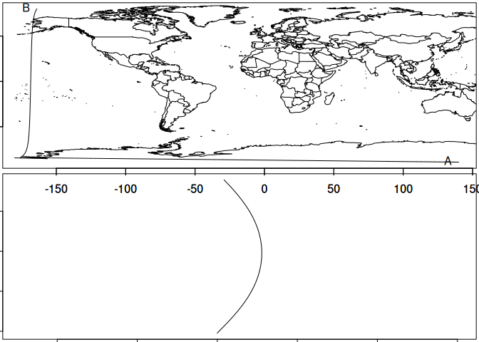
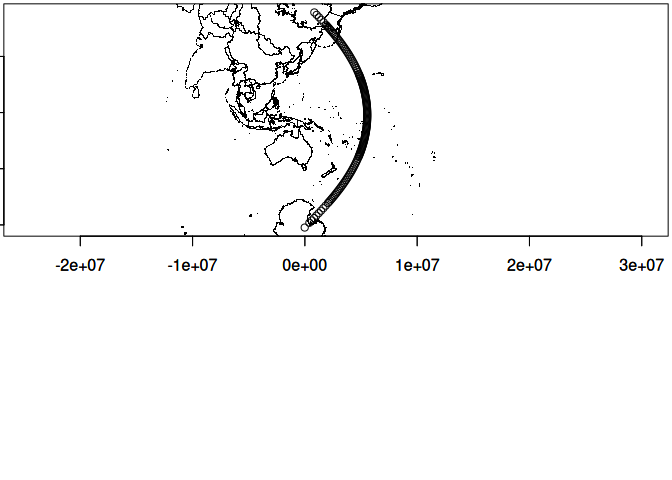
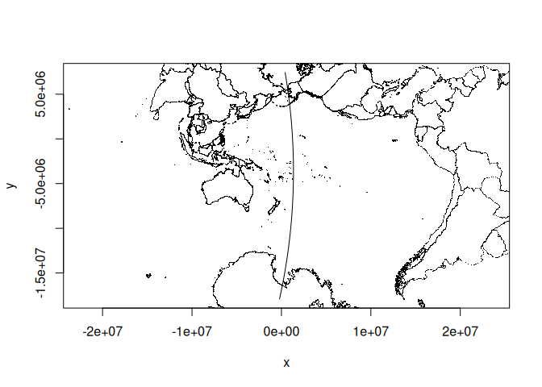
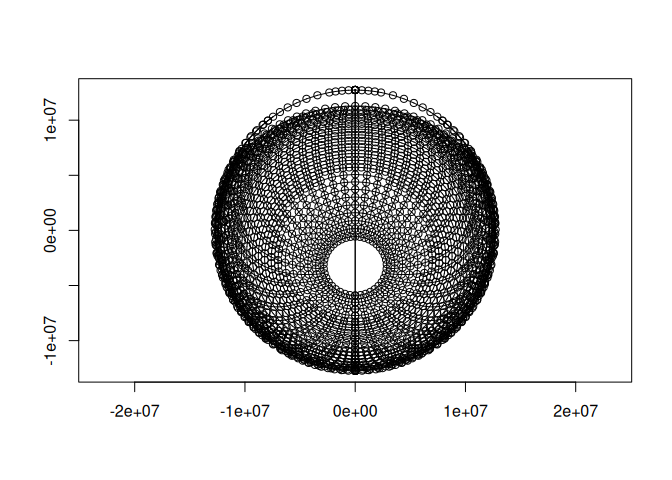
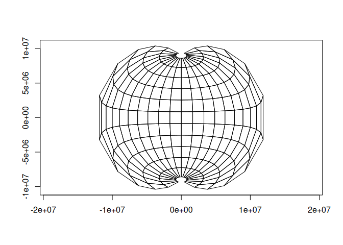
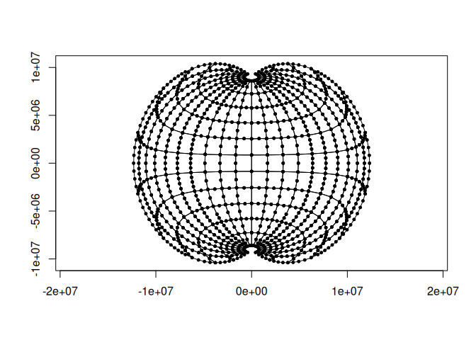

The goal of bigcurve is to adaptively densify lines: insert vertices along great circle arcs exactly where a map projection bends them, and nowhere else. This is the adaptive resampling scheme of d3-geo by Mike Bostock, brought to R for paths and for segment meshes.
The error is controlled in the plane of the target projection: straight chords drawn between output vertices stay within tolerance (in projected units) of the true projected curve. By default the tolerance is derived from the projected extent, “about one part in 2048 of the plot”.
Installation
You can install the development version of bigcurve like so:
install.packages("bigcurve", repos = c("https://hypertidy.r-universe.dev", "https://cloud.r-project.org"))You will need the PROJ development library (libproj-dev on Debian/Ubuntu, proj-devel on Fedora, proj from Homebrew); Windows and recent Rtools have PROJ built in.
Example
We get just enough points to carry the curvature of a line from point A to point B (the shortest great circle distance) into a projection.
library(bigcurve)
crs <- "+proj=tmerc +lon_0=147 +lat_0=-42"
s <- segment(c(140, -164), c(-89, 80))
d <- densify(s, crs)
dim(d)
#> [1] 151 2
op <- par(mfrow = c(2, 1), mar = rep(0.2, 4))
m <- do.call(cbind, maps::map(plot = FALSE)[1:2])
plot(d, type = "l"); lines(m); axis(1); axis(2)
text(s, lab = c("A", "B"), pos = 2)
plot(rproj_xy(d, crs), type = "l", asp = 1)
plot(rproj_xy(d, crs), type = "p", asp = 1)
points(rproj_xy(m, crs), pch = ".")
axis(1); axis(2)
par(op)
The same path in a different projection is the same path, densified differently, because the curvature is a different situation there.
crs2 <- "+proj=stere +lon_0=180 +lat_0=20"
d2 <- densify(s, crs2)
plot(rproj_xy(d2, crs2), type = "l", asp = 1)
points(rproj_xy(m, crs2), pch = ".")
Graticules
densify() also works on segment meshes (rgl mesh3d style, vb vertices and is segment indices), so a whole graticule refines in one call. textures::segs() builds one and textures provides the 2D mesh plot.
library(textures)
prj <- "+proj=laea +lat_0=-60"
mesh <- segs(c(40, 20), extent = c(-180, 180, -65, 65))
out <- densify(mesh, prj)
c(input = ncol(mesh$vb), output = ncol(out$vb))
#> input output
#> 861 2065
## project the refined mesh for display
out$vb[1:2, ] <- t(rproj_xy(t(out$vb[1:2, , drop = FALSE]), prj))
plot(out, asp = 1)
points(t(out$vb[1:2, ]))
Convert an input polygon dataset, compare with and without adaptive densification.
p <- geos::as_geos_geometry(terra::as.polygons(terra::rast(terra::ext(-150, 150, -85, 85), res = 15)))
tgt <- "+proj=laea"
tr <- PROJ::proj_trans_create(wk::wk_crs(p)$wkt, tgt)
plot(wk::wk_transform(p, tr))
x <- wk::wk_transform(wkpool::segments_to_wkb(bigcurve::densify(wkpool::establish_topology(p), tgt, source = wk::wk_crs(p)$wkt)), tr)
plot(x)
points(wk::wk_coords(x)[, c("x", "y"), drop = FALSE], pch = 19, cex = .5)
Notes
Output coordinates are in the source coordinate system (geographic by default); project them for plotting, as above. Points that cannot be projected (beyond the horizon of an orthographic projection, say) never error: their segments are simply left alone, clipping is a job for another package.
The proper source of goodness is here:
https://bost.ocks.org/mike/example/
Code of Conduct
Please note that the bigcurve project is released with a Contributor Code of Conduct. By contributing to this project, you agree to abide by its terms.